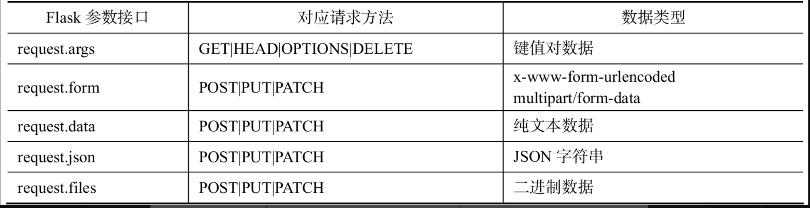
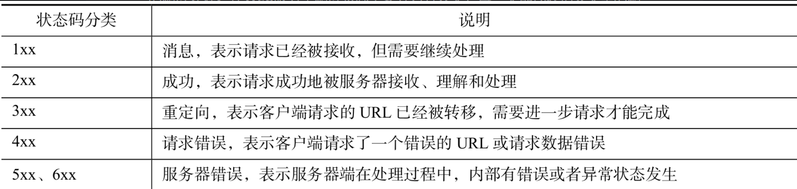

Contents
4.3. Web相关库¶
主要介绍两个与Web相关的库：
一个是用于发送Web请求的requests库，
另一个则是用于提供Web服务的Flask框架。
4.3.1. 1. requests-HTTP网络请求库¶
requests作为一个专门为“人类”编写的HTTP请求库，其易用性很强，因此在推出之后就迅速成为Python中首选的HTTP请求库。requests库的最大特点是提供了简单易用的API，让编程人员可以轻松地提高效率。由于requests不是Python的标准库，因此在使用之前需要进行安装：
$ pip install requests
1.1 HTTP请求¶
通过requests可以完成各种类型的HTTP请求，包括HTTP、HTTPS、HTTP1.0、HTTP1.1及各种请求方法。
requests库支持的HTTP方法如下。
get——发送一个GET请求，用于请求页面信息。
options——发送一个OPTIONS请求，用于检查服务器端相关信息。
head——发送一个HEAD请求，类似于GET请求，但只请求页面的响应头信息。
post——发送一个POST请求，通过body向指定资源提交用户数据。
put——发送一个PUT请求，向指定资源上传最新内容。
patch——发送一个PATCH请求，同PUT类似，可以用于部分内容更新。
delete——发送一个DELETE请求，向指定资源发送一个删除请求。
可以看到，requests使用与HTTP请求方法同名的API来提供相应的HTTP请求服务，从而降低了编程人员的学习和记忆成本。另外，这些API方法都调用同一个基础方法，因此在调用参数的使用上也基本保持一致。
GET请求示例
import requests
r = requests.get("http://httpbin.org/get")
print(r.status_code) # 200
示例中通过requests.get方法来发送HTTP的GET请求，使用的参数是被访问的URL地址。当然也可以附加URL参数来发送一个带参数的GET请求。具体示例如下：
r = requests.get("http://httpbin.org/get?name=python&age=14")
print(r.status_code)
params = {'name':'python','age':14}
r = requests.get("http://httpbin.org/get",params=params)
print(r.status_code)
与GET不同的是，POST一般会通过HTTP的body来发送请求数据。这样设计的好处是支持更多类型和更多内容的请求数据。
具体而言，POST请求支持的请求数据类型如下。
（1）纯文本——任意格式的普通字符串。
（2）二进制——二进制字符串，例如文件二进制内容。
（3）x-www-form-urlencoded——键值对参数形式，一种特定格式的纯文本内容。
（4）multipart/form-data——同时支持二进制和键值对形式的数据格式。
日常工作中经常使用（1）、（3）、（4）这3种形式来发送POST数据。其中纯文本形式的请求示例如下：
import requests
data = "hello python"
r = requests.post("http://httpbin.org/post", data=data)
print(r.status_code)
如果在请求时需要上传文件内容，那么就需要使用multipart/form-data的形式来发送POST请求。
import requests
data = {'name': 'python', 'age': 14}
files = {'file1': open('/path/to/test1.xls', 'rb'), 'file2': open('/path/to/test2.png', 'rb')}
# 请求时指定了files参数，就会以multipart/form-data形式发送数据
r = requests.post("http://httpbin.org/post", data=data, files=files)
print(r.status_code)
其他几种HTTP请求方法的使用与GET、POST基本一致，要么与GET一样，通过URL传递请求数据；要么与POST一样，通过body传递请求数据。具体示例如下：
# 与 GET 相同的传参方式
>>> r = requests.delete('http://httpbin.org/delete')
>>> r = requests.head('http://httpbin.org/get')
>>> r = requests.options('http://httpbin.org/get')
# 与 POST 相同的传参方式
>>> r = requests.put('http://httpbin.org/put', data = {'key':'value'})
>>> r = requests.patch('http://httpbin.org/patch', data = {'key':'value'})
requests库还提供了HTTP请求头的设置，只需要在各请求方法中使用headers参数即可。具体示例如下：
>>> import json
>>> url = 'https://api.github.com/some/endpoint'
>>> data = json.dumps({'name': 'python'})
>>> headers = {'Content-Type': 'application/json'}
>>> r = requests.post(url, data=data, headers=headers)
示例中为POST请求设置了Content-Type请求头信息为application/json，这样在服务器端的程序就可以通过Content-Type信息来确定请求体的内容为JSON格式。当然，如果只是想发送JSON数据的请求，还可以直接通过json参数来实现。具体示例如下：
>>> url = 'https://api.github.com/some/endpoint'
>>> r = requests.post(url, json={'name': 'python'})
最后，想要给HTTP请求设置一些cookie信息也非常方便，唯一需要做的只是使用cookies参数而已。具体示例如下：
>>> url = 'http://httpbin.org/cookies'
>>> cookies = {'cookie_name': 'cookie_value'}
>>> r = requests.get(url, cookies=cookies)
1.2 HTTP响应¶
通过requests各请求方法发送HTTP请求之后，会返回一个Response对象，即HTTP响应对象。通过Response对象可以查看请求的响应状态和响应内容，包括响应头、cookie和响应体。
查看请求响应状态的示例如下：
>>> r = requests.get('http://httpbin.org/get')
>>> r
<Response [200]>
>>> r.status_code # 响应状态码
200
>>> r.reason # 响应状态信息
'OK'
查看响应头信息和cookie的示例如下：
>>> r.headers # 响应头信息
{'Date': 'Sat, 06 Jun 2020 08:27:48 GMT', 'Content-Type': 'application/json',
'Content-Length': '308', 'Connection': 'keep-alive', 'Server': 'gunicorn/19.9.0',
'Access-Control-Allow-Origin': '*', 'Access-Control-Allow-Credentials': 'true'}
>>> r.cookies # 响应 cookie
<RequestsCookieJar[]>
Response对象响应体内容的形式有3种，分别为二进制、unicode、json。当访问的请求资源是文件时，则需要通过二进制的方式来获取响应内容。具体示例如下：
>>> r = requests.get('http://www.testqa.cn/static/testqa2.png')
>>> with open('test.png', 'wb') as f: # 下载图片并保存在本地
... f.write(r.content)
...
179543
如果请求返回的是普通文本内容，则可以通过unicode的方式来获取内容。具体示例如下：
>>> r = requests.get('http://httpbin.org/get')
>>> r.text # 获取 unicode 形式的响应体内容
'{\n "args": {}, \n "headers": {\n "Accept": "*/*", \n "Accept-Encoding": "gzip,
deflate", \n "Host": "httpbin.org", \n "User-Agent": "python-requests/2.20.0", \n
"X-Amzn-Trace-Id": "Root=1-5edb57b9-0fd017fb754da1d82cabcc00"\n }, \n "origin":
"221.218.139.172", \n "url": "http://httpbin.org/get"\n}\n'
需要注意的是，默认情况下通过Response对象的text获取unicode响应内容时，选择的编码方式为系统的编码方式；如果请求的URL返回内容与本地的编码方式不一致，获取的unicode内容将会出现乱码。解决乱码问题只需在获取unicode内容之前，设置指定的编码格式即可。具体示例如下：
>>> r = requests.get('http://httpbin.org/get')
>>> r.encoding = 'utf-8' # 设置编码格式
>>> r.text
如果请求返回的内容是标准的JSON格式，除了通过unicode形式获取响应体外，还可以通过json方法获取对应的反序列化对象。具体示例如下：
>>> r = requests.get('http://httpbin.org/get')
>>> r.json() # 获取 unicode 内容的 JSON 反序列化对象
{'args': {}, 'headers': {'Accept': '*/*', 'Accept-Encoding': 'gzip, deflate', 'Host':
'httpbin.org', 'User-Agent': 'python-requests/2.20.0', 'X-Amzn-Trace-Id':
'Root=1-5edb57b9-0fd017fb754da1d82cabcc00'}, 'origin': '221.218.139.172', 'url':
'http://httpbin.org/get'}
除了获取常规的响应内容之外，Response对象还提供了一个history的属性，用于查询当前请求的重定向历史记录。这个记录对于调试问题很有帮助，具体示例如下：
>>> r = requests.get('http://github.com')
>>> r.url
'https://github.com/'
>>> r.history
[<Response [301]>]
注意
对于重定向的默认设置，requests中GET、OPTIONS、POST、PUT、PATCH、DELETE默认允许重定向，只有HEAD默认不允许重定向。
如果希望改变重定向设置，则可以通过设置请求方法的allow_redirects参数来实现。
4.3.2. 2.Flask-Web开发框架¶
Python中可以用来进行Web开发的框架有很多，包括Django、Flask、Bottle、Torando、web.py等。
它们都有着不同的优缺点，本书以简单易学、快速开发为目标，选择了Flask作为Web框架进行介绍。
Flask是一个简单易学，可以快速完成一个简易Web服务开发的“微框架”。相比于Django、Torando等框架，Flask更加简洁和灵活。另外，Flask也提供了足够的功能支持Web服务开发的常规需求，用一句话来形容就是：麻雀虽小、五脏俱全。
Flask是Python的第三方库，因此在正式使用之前需要进行安装：
$ pip install Flask
通过Flask来启动一个Web服务的学习成本几乎为零，甚至只需要写几行代码就可以实现。下面是一个最简单的官方示例：
from flask import Flask
app = Flask(__name__)
@app.route('/')
def hello_world(): # put application's code here
return 'Hello World!'
if __name__ == '__main__':
app.run()
可以看到，即使算上空行总共也就只有9行代码，而这已经是一个完整的Web服务了。
示例中的第一行代码用于引入Flask类并在随后对其进行了实例化；之后通过该实例的route装饰器来为Flask服务绑定路由和处理函数；处理函数中返回的是给客户端的具体信息；
最后通过Flask实例的run方法启动Web服务。假设上述代码被保存在一个名为hello.py的文件中，那么其执行启动后的效果如下：
D:\pythonproject\flaskProject\venv\Scripts\python.exe -m flask run
* Serving Flask app 'app.py'
* Debug mode: off
WARNING: This is a development server. Do not use it in a production deployment. Use a production WSGI server instead.
* Running on http://127.0.0.1:5000
Press CTRL+C to quit
127.0.0.1 - - [31/Aug/2022 13:58:04] "GET / HTTP/1.1" 200 -
127.0.0.1 - - [31/Aug/2022 13:58:04] "GET / HTTP/1.1" 200 -
127.0.0.1 - - [31/Aug/2022 13:58:05] "GET /favicon.ico HTTP/1.1" 404 -
从启动结果可以看出，Web已经正常运行，并且可以通过http://127.0.0.1:5000/来访问Web服务。可以通过浏览器或者curl等工具来访问该地址，最终会看到该接口返回的内容为“Hello,World!”
2.1 路由绑定¶
Web服务本质上是一种响应式服务，它根据用户访问的不同URL来执行对应的业务处理；而URL和业务处理函数之间的映射关系，在Web服务框架中则是通过路由的方式来实现的；所以Web服务开发的第一步往往都是从路由绑定开始的。Flask中路由绑定是通过route装饰器实现的，该装饰器所实现的功能就是把指定的URL和被装饰的函数进行绑定，当用户访问该URL时就会自动触发对应的绑定函数。具体示例如下：
@app.route('/')
def hello_world(): # put application's code here
return 'Hello World!'
上述示例是一个简单的路由绑定，它会把URL路径“/”和hello_world处理函数进行绑定，当用户通过Web服务访问URL“/”时，就会执行hello_world函数并把函数的返回内容作为用户请求的响应内容。
如果想要增加对HTTP请求方法的支持，就需要在调用route装饰器时显式地设置methods参数。具体示例如下：
@app.route('/', methods=['GET', 'POST'])
def hello_world(): # put application's code here
return 'Hello World!'
上述示例中hello_world函数将会同时支持URL路径“/”的GET和POST请求的处理。当然，也可以修改为支持其他HTTP请求方法，最终设定的请求方法将会覆盖默认的设置。
同样地，多个URL路径也可以同时绑定到一个请求处理函数。具体示例如下：
@app.route('/')
@app.route('/hello')
def hello_world(): # put application's code here
return 'Hello World!'
上述示例把URL路径“/”和“/hello”同时绑定到hello_world函数，即访问这两个URL路径会得到相同的响应结果。
另外一些场景下，可能希望URL的内容是可变的，且希望请求处理函数根据URL中变化的内容返回不同的响应结果，此时就需要用到Flask的动态路由配置功能。具体示例如下
@app.route('/hello/<string:name>')
def hello_world(name):
return f"hello {name}"
上述示例中的URL就是一个动态的URL，其中＜string:name＞就是动态的部分，它会在实际请求时匹配URL中/hello/后面的对应内容，并把值传递给处理函数的同名参数。因此，在处理函数定义时也需要相应地添加一个同名的参数。下面是不同请求URL的响应示例：
$ curl http://127.0.0.1:5000/hello/python
hello python
$ curl http://127.0.0.1:5000/hello/world
hello world
$ curl http://127.0.0.1:5000/hello/
<!doctype html>
<html lang=en>
<title>404 Not Found</title>
<h1>Not Found</h1>
$ curl http://127.0.0.1:5000/hello/python/test
<!doctype html>
<html lang=en>
<title>404 Not Found</title>
其中，变量类型是可选的，默认为string，其他支持的类型包括int、float、path和自定义类型。实际请求时使用的内容必须和指定的类型相匹配，否则将会抛出相关异常。
2.2 请求处理¶
在设计好具体的URL和进行路由绑定之后，接下来要做的就是对请求处理函数进行业务开发。请求函数的处理通常分为以下三大步骤。
（1）请求参数的解析。
（2）业务逻辑的处理。
（3）处理结果的返回。
首先，在请求参数的解析方面，Flask提供了多种获取接口来对应不同的请求方法和数据格式。
Flask请求参数获取对应关系
针对不同的请求方法和接收的数据类型，需要选择对应的数据获取接口来正确地获取数据。例如，对于GET请求的处理函数，其只能通过request.args属性来获取HTTP客户端传递的请求参数数据。具体示例如下：
from flask import Flask, request
app = Flask(__name__)
@app.route('/', methods=['GET', 'POST'])
def parse():
get_args = request.args # 类字典对象
form_data = request.form # 类字典对象
raw_data = request.data # 字符串或二进制
json_data = request.json # JSON 反序列化对象
files = request.files # 类字典对象
return 'success'
上述示例中演示了如何通过不同的数据接口获取请求参数。具体是否能够获取正确的请求参数，取决于HTTP客户端发送请求的方法和数据类型。
例如，HTTP客户端发送了一个普通的form表单，那么将只有form_data能够获取到内容；如果发送一个带文件的form表单，那么files将能够获取到内容。下面是不同HTTP请求的参数获取具体示例：
from flask import Flask, request
app = Flask(__name__)
# curl http://127.0.0.1:5000/?name=python
@app.route('/', methods=['GET'])
def args_example():
get_args = request.args # 获取 GET 请求参数对象
name = get_args.get('name') # 获取 name 参数的值
return name
# curl http://127.0.0.1:5000/json -X POST -d '{"name":"python"}' -H "Content-Type:application/json"
@app.route('/json', methods=['POST'])
def json_example():
json_data = request.json # 获取 JSON 数据
name = json_data.get('name')
return name
# curl http://127.0.0.1:5000/file -F "upload=@test.json"
@app.route('/file', methods=['POST'])
def files_example():
files = request.files # 获取文件参数对象
upload_file = files.get('upload') # 获取字段为 upload 的文件对象
upload_file.save('new_test.txt') # 保存文件到指定文件名
return 'success'
if __name__ == '__main__':
app.run()
关于请求处理函数中的具体业务处理，由于与具体接口的业务有关且不具有通用性，因此这里不做具体介绍。在业务处理完成之后，请求处理函数最终还是需要返回一个结果给HTTP客户端，以表示当次请求服务器端已经处理结束，并在响应中返回处理的具体结果。
Flask中提供了多种类型的响应内容返回方式，具体如下。
返回纯文本内容。
返回JSON内容。
返回HTML内容。
其中，返回纯文本内容方式是直接返回一个普通字符串。具体示例如下：
@app.route('/', methods=['GET'])
def hello_world():
return "hello world!"
该方式返回的响应状态码默认为200，响应内容的类型为text/html。当然也可以在返回内容时指定状态码和响应内容的类型。例如下面示例将会返回一个状态码为201、类型为text/plain的“Hello World！”响应内容：
@app.route('/', methods=['GET'])
def hello_world():
return "Hello World!", 201, {"Content-Type": "text/plain"}
如果想要返回JSON类型的响应内容，可以通过flask.jsonify函数来实现。它会自动把支持JSON序列化的数据类型转换为JSON字符串，并设置响应内容的类型为application/json。具体示例如下：
@app.route('/', methods=['GET'])
def hello_world():
return jsonify({"name": "python"})
当然，返回HTML内容则是Flask支持的最完整的功能。最简单的方式与返回纯文本一样，只要直接返回HTML内容即可。具体示例如下：
@app.route('/', methods=['GET'])
def hello_world():
return "<h1>Hello World!</h1>"
如果HTML内容过长，在代码中直接展示出来不够易读，那么可以把HTML内容存放在单独的文件中，再通过open函数读取内容并返回。具体示例如下：
@app.route('/', methods=['GET'])
def hello_world():
return open('test.html', 'r', encoding='utf-8').read()
2.3 模板渲染¶
尽管直接读取HTML文件可以解决代码易读性的问题，但是如果想要返回动态的HTML内容，则需要引入模板机制。Flask中配置了Jinja2模板引擎，因此可以直接引入Jinja2模板引擎来进行HTML模板内容的渲染。这里所谓的模板本质也是HTML内容，只不过模板文件中包括了静态的HTML内容和模板语法。
其中静态的HTML内容不会被改变，而模板语法则会根据上下文内容被转换为相应的HTML内容，即模板语法部分的内容是可以控制的动态内容，因此在功能上实现了动态HTML内容的效果。这里假设有一个名为test.html的模板文件，其内容如下：
<h1>Hello {{ name }}</h1>
$ curl http://127.0.0.1:5000/hello/python
<h1>Hello python</h1>
$ curl http://127.0.0.1:5000/hello/hujianli
<h1>Hello hujianli</h1>
说明
关于Jinja2的具体语法使用，感兴趣的读者可以查看官方文档来进行学习，由于本书中后期将使用Vue进行前后端分离式的Web开发，因此这里不再对后端渲染进行过多的介绍。
最后，如果想改变渲染模板场景下的状态码和相关的头信息，则可以通过显式创建一个Flask响应对象来实现。具体示例如下：
from flask import Flask, render_template, make_response
app = Flask(__name__)
@app.route('/hello/<name>')
def hello(name):
rep = make_response(render_template('test.html', name=name))
rep.status_code = 201
rep.headers['Content-Type'] = 'text/plain'
return rep
if __name__ == '__main__':
app.run()
2.4 静态文件¶
Flask中除了可以返回HTML等文本内容之外，内置的Web服务器还支持静态文件的访问。方法为在Flask启动文件的同一目录下创建一个static文件夹，并把静态文件存放在该文件夹下。
假设Flask项目的目录结构如下：
$ tree flaskProject/ -L 3
flaskProject/
├── __pycache__
│ └── app.cpython-38.pyc
├── app.py
├── static
│ ├── foo
│ │ └── test2.png
│ └── test.png
├── templates
│ └── test.html
└── venv
如果要访问示例中的test.png和test2.png，则具体的访问地址分别为：
http:/127.0.0.1:5000/static/test.png
http:/127.0.0.1:5000/static/foo/test2.png
任意类型的文件都可以作为静态资源，只要存放在static目录下，就可以通过上述URL路径规则进行访问。
2.5 重定向与错误¶
在Web服务访问时并不总是能够返回正确的结果，当用户访问了错误的URL，或者传输了错误的请求参数，Web服务就需要返回相关的错误信息进行提示。
Flask中针对错误请求的场景提供了相关的API，包括标准错误的响应和标准重定向的响应处理。在Web服务中响应状态主要分为五大类，每一类都代表相关类型的响应，具体说明如表
通常情况下1xx、2xx、4xx、5xx、6xx类的响应在Web服务中都已经有默认的实现，只有3xx类的响应需要人为配置。Flask提供的相关API可以针对3xx、4xx、5xx类的响应进行组装。
通过flask. redirect函数可以方便地进行重定向响应的设置。具体示例如下：
from flask import Flask, redirect
app = Flask(__name__)
@app.route('/hello')
def hello():
return redirect('/')
if __name__ == '__main__':
app.run()
当用户访问示例中的’/hello’地址时，Web服务器会返回一个302的请求跳转响应，客户端获取到302响应后会读取响应头中的Location字段值，该值是一个新的跳转URL，客户端会进一步请求该URL地址，直到获取最终的响应内容。
说明
重定向支持连续性，即上一个重定向请求的URL同样可以返回一个重定向响应。需要注意的是，在配置重定向时要避免循环重定向的问题。
Web服务中支持重定向的状态码除了302，还有301、307等。通过指定重定向状态码可以返回不同类型的重定向响应，具体示例如下：
@app.route('/hello')
def hello():
return redirect('/', 301) # 返回 301 重定向
@app.route('/')
def hello_world():
return "hello world"
有时可能希望返回4xx或5xx类的响应，那么就可以通过flask.abort函数来实现。具体示例如下：
2.7 启动设置¶
通过默认方式启动Flask之后，只有本机可以通过http://127.0.0.1:5000来访问Web服务；其他机器如果希望访问该Web服务，则需要在启动时修改host配置参数。具体示例如下：
from flask import Flask
app = Flask(__name__)
@app.route('/')
def index():
return 'success'
if __name__ == '__main__':
app.run(host='0.0.0.0')
示例中指定host为’0.0.0.0’，表示该Web服务可以被任意IP地址访问。如果只希望被指定的IP地址访问，则可以设置host为特定的IP。
Flask在启动时也可以指定监听的端口，默认情况下Flask只监听5000端口，如果希望Web服务通过80端口来访问，则可以指定port参数为80。具体示例如下：
from flask import Flask
app = Flask(__name__)
@app.route('/')
def index():
return 'success'
if __name__ == '__main__':
app.run(host='0.0.0.0', port=80, debug=True)
此外，还可以在启动Flask时指定debug为True，表示以调试模式启动Web服务。这样做的好处是当修改了Web代码后，Flask会自动重新加载最新的代码以保证Web功能可以及时更新。
最后，Flask默认以单进程、单线程的方式启动Web服务，因此当有任意一个用户请求被阻塞之后，整个Web服务就会被阻塞。为了避免这类情况的发生，可以设置以多进程、多线程的方式来启动Flask：
app.run(host='0.0.0.0', port=80, threaded=True) # 多线程启动
app.run(host='0.0.0.0', port=80, processes=True)# 多进程启动
注意
Flask只能设置为多进程或者多线程启动，两者不能同时进行设置，否则会抛出相关异常。
Flask自带的多进程、多线程处理机制并不是最高效的，对于正式的生产环境通常建议通过WSGI的方式来部署和启动。
2.8 项目分层¶
前面在介绍Flask基础功能时，为了便于演示，把代码都写在同一个文件中；而实际项目开发时，随着功能模块的增多，并不会一直都把代码写在同一个文件中。为了便于项目代码结构的管理，通常会对项目结构进行拆分和规划，而最常用的方式就是分层思想。
通过分层思想来管理项目代码，应用最广泛的莫过于Java的Web开发，其推崇的MVC分层架构一直沿用至今。接下来将从单个文件开始，介绍如何把项目拆分为MVC的结构形式。这里假设有一个名为app.py的文件，其内容如下：
from flask import Flask
app = Flask(__name__)
@app.route('/')
def index():
print('执行 DB 操作')
return '<h1>Hello Python</h1>'
if __name__ == '__main__':
app.run(host='0.0.0.0', port=80, debug=True)
在app.py文件所在目录有4个子目录，分别为对应MVC的model、templates、controller及存放静态文件的static目录。具体的目录结构如下：
$ tree -L 2 flaskProject/
flaskProject/
├── __pycache__
│ └── app.cpython-38.pyc
├── app.py
├── controller
│ └── __init__.py
├── model
│ └── __init__.py
├── static
│ ├── foo
│ └── test.png
├── templates
│ └── test.html
└── venv
├── Lib
├── pyvenv.cfg
└── Scripts
model目录用于存放与数据模型操作相关的模块
templates目录用于存放与用户界面相关的HTML模板文件
controller目录用于存放接收和处理用户请求的业务模块
static目录用于存放非HTML的静态资源文件。
首先，Web项目拆分的第一步是把用户处理函数迁移到controller目录中，这将使得Flask启动文件变得更加简洁。在controller目录中新建一个index.py文件，其内容如下：
def index():
print('执行 DB 操作')
return '<h1>Hello Python</h1>'
之后，需要更新app.py文件内容，从外部导入处理函数并绑定路由。更改后的app.py文件内容如下：
from flask import Flask
from controller.index import index # 从 controller 导入
app = Flask(__name__)
app.route('/')(index) # 绑定路由
if __name__ == '__main__':
app.run(host='0.0.0.0', port=80, debug=True)
接下来，需要把返回给用户的视图内容迁移到templates目录中。在templates目录下新建一个index.html，其内容如下：
<!DOCTYPE html>
<html lang="en">
<head>
<meta charset="UTF-8">
<title>Title</title>
</head>
<body>
<h1>Hello Python</h1>
</body>
</html>
之后，需要对controller:raw-latex:index.py文件内容进行修改，修改后的内容如下：
from flask import render_template
def index():
print('执行 DB 操作')
return render_template('index.html')
之后，需要把数据模型相关的操作迁移到model目录。具体要做的是在model目录下新建一个db.py文件，其内容如下：
def do_something_in_db():
print('执行 DB 操作')
最后，再次对controller:raw-latex:index.py文件内容进行修改，修改后的内容如下：
from flask import render_template
from model.db import do_something_in_db
def index():
do_something_in_db()
return render_template('index.html')
至此，将单个文件拆分为MVC项目结构的工作内容已经完成，最后来看一下拆分完成之后的项目整体结构：
$ tree -L 2 flaskProject/
flaskProject/
├── app.py
├── controller
│ ├── __init__.py
│ └── index.py
├── model
│ ├── __init__.py
│ └── db.py
├── static
│ ├── foo
│ └── test.png
├── templates
│ └── index.html
└── venv
├── Lib
├── pyvenv.cfg
└── Scripts
此后，添加新的Web接口时，就可以按照前面介绍的步骤，把相应的功能模块或者文件添加到对应的目录下并正确引用。
2.9 项目部署¶
当项目完成开发之后就需要部署到生产环境，与开发环境不同的是，生产环境需要保证Web服务运行的稳定性和执行效率。
而Flask自带的Web服务器在性能、稳定性、安全性上都不是最佳选择，替代方案是在生产环境通过Flask的WSGI进行部署和启动Web服务。
为了让Flask支持WSGI方式的部署，需要对Flask启动文件进行修改。修改后的文件内容如下：
from flask import Flask
from controller.index import index
def create_app():
app = Flask(__name__)
app.route('/')(index)
return app
if __name__ == '__main__':
create_app().run(host='0.0.0.0', port=80, debug=True)
修改后的文件中添加了一个create_app函数，它主要用来创建Flask实例对象；这个实例对象既可以用来直接启动Flask内置的Web服务器，也可以传递给WSGI服务器，用于启动Web服务。
支持Flask的WSGI服务器有很多，包括Gunicorn、Gevent、Twisted、waitress、uWSGI等。其中除了uWSGI是由C语言开发之外，其他都是用Python开发的第三方WSGI库。
以waitress为例，首先需要安装waitress的第三方库。具体命令如下：
$ pip install waitress
之后，确保当前目录为Flask启动文件所在目录，在命令行执行如下命令：
$ waitress-serve --listen=*:80 --call app:create_app
Serving on http://youcomputername:80
Serving on http://localhost:80
完整的Flask项目初始结构被存放在https://github.com/five3/python-sdet。
后续项目的后端开发也将基于该基础项目结构。在运行该基础项目之前，需要安装相应的依赖库，可在项目的根目录执行如下命令：
$ pip install-r requirements.txt
2.10 Flask 开发 RESTful 服务¶
RESTful定义¶
RESTFUL是一种网络应用程序的设计风格和开发方式，基于HTTP，可以使用XML格式定义或JSON格式定义。
RESTFUL特点¶
每一个URI代表1种资源；
客户端使用GET、POST、PUT、DELETE4个表示操作方式的动词对服务端资源进行操作：GET用来获取资源，POST用来新建资源（也可以用于更新资源），PUT用来更新资源，DELETE用来删除资源；
通过操作资源的表现形式来操作资源；
资源的表现形式是XML或者HTML；
客户端与服务端之间的交互在请求之间是无状态的，从客户端到服务端的每个请求都必须包含理解请求所必需的信息。
Flask RESTful框架¶
基于Flask开发RESTful的框架Flask-RESTful。官网地址http://www.pythondoc.com/Flask-RESTful/index.html
安装¶
pip install flask-restful
简单样例¶
from flask import Flask
import flask_restful as restful
app = Flask(__name__)
api = restful.Api(app)
class HelloWorld(restful.Resource):
def get(self):
return {'hello': 'world'}
api.add_resource(HelloWorld, '/')
if __name__ == '__main__':
app.run(debug=True)
完整样例¶
from flask import Flask
from flask_restful import reqparse, abort, Api, Resource, fields, marshal_with
app = Flask(__name__)
api = Api(app)
TODOS = {
'todo1': {'task': 'build an API', "name": "xxx"},
'todo2': {'task': '?????'},
'todo3': {'task': 'profit!'},
}
def abort_if_todo_doesnt_exist(todo_id):
if todo_id not in TODOS:
abort(404, message="Todo {} doesn't exist".format(todo_id))
parser = reqparse.RequestParser()
parser.add_argument('task', type=str, required=True, help="task field")
resource_fields = {
'name': fields.String
}
class Todo(Resource):
@marshal_with(resource_fields)
def get(self, todo_id):
abort_if_todo_doesnt_exist(todo_id)
return TODOS[todo_id]
def delete(self, todo_id):
abort_if_todo_doesnt_exist(todo_id)
del TODOS[todo_id]
return '', 204
def put(self, todo_id):
args = parser.parse_args()
task = {'task': args['task']}
TODOS[todo_id] = task
return task, 201
class TodoList(Resource):
def get(self):
return TODOS
def post(self):
args = parser.parse_args()
todo_id = int(max(TODOS.keys()).lstrip('todo')) + 1
todo_id = 'todo%i' % todo_id
TODOS[todo_id] = {'task': args['task']}
return TODOS[todo_id], 201
api.add_resource(TodoList, '/todos')
api.add_resource(Todo, '/todos/<todo_id>')
if __name__ == '__main__':
app.run(debug=True)